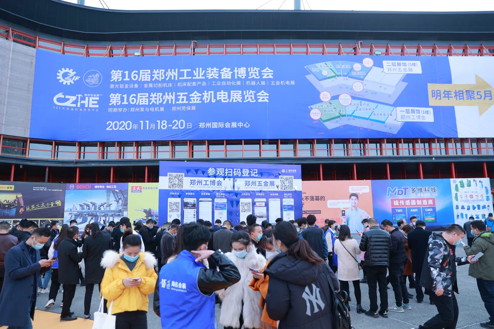
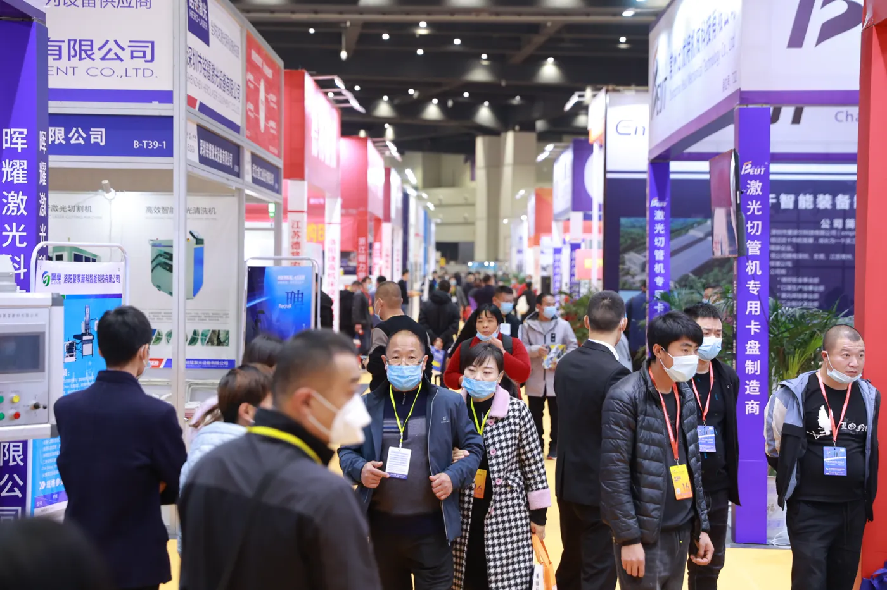

聚焦双循环河南发展新机，2021郑州工博会（5.20-23）渠道下沉挖掘用户采购需求，精准匹配供需双方
首页 / 聚焦双循环河南发展新机，2021郑州工博会（5.20-23）渠道下沉挖掘用户采购需求，精准匹配供需双方2020年5月，习近平总书记提出并多次强调要“加快形成以国内大循环为主体、国内国际双循环相互促进的新发展格局”。推动形成双循环新发展格局，是未来一段时期经济发展的首要任务和“十四五”时期制造业改革发展的着眼点。
“一中心、四区”，中部崛起势头正盛
中部崛起战略实施以来，中部地区经济进入快速发展阶段。中部地区规划部署在“三基地、一枢纽”优化升级为“一中心、四区”（全国重要先进制造业中心、全国新型城镇化重点区、全国现代农业发展核心区、全国生态文明建设示范区、全方位开放重要支撑区）战略定位。
高质量发展的河南制造业，东部地区产业转移重要目的地
近年来，河南把制造业高质量发展作为主攻方向，构建“556”产业体系，实施“六大提升专项”，打造中原城市群，重点依托郑州、洛阳都市圈，推动高端制造和战略性新兴产业集群发展，打造制造业高质量发展核心区；以良好的工业运行态势，承接东部产业转移、西部资源输出、南北经贸交流，努力建成全国先进制造业强省。
加快制造业质量变革、效率变革、动力变革，建设万亿级装备制造基地、万亿级食品制造基地、万亿级电子信息产业基地、5000 亿级汽车制造基地、5000亿级新材料产业基地，到2022年，制造业增加值占全省生产总值比重35%左右，规模以上工业企业研究开发与试验发展经费支出占营业收入比重达到1%，单位工业增加值能耗年均下降5%。到2025年，产业基础能力和产业链现代化水平达到国内一流，形成数个万亿级产业集群、一批千亿级新兴产业集群和百亿级企业。
河南工业实力持续跃升，取得新的历史性成就
2016至2019年，河南全部工业增加值从1.6万亿提高到近2万亿元，净增3000多亿元，年均增长7.5%，高于全国1.4个百分点，工业总量稳居全国第五、中西部第一，工业产品产量位居全国前列。主营业务收入超百亿元工业企业44家，境内外上市企业124家，“新三板”上市企业320家。
主导产业比重从44.3%提高到46.1%；
战略性新兴产业比重从11.9%提高到20%以上；
建设国家级新型工业化产业示范基地13个；
中小企业数量从43.44万家增长到54.05万家；
国家级制造业单项冠军23家，专精特新企业92家；
建成智能工厂和智能车间571个；
建成工业互联网平台25个，推动企业上云10万余家；
承接亿元以上重点项目3422个、实际到位省外资金1.2万亿元；
2020年郑州规模以上工业增加值同比增长5.2%，高于全国（2.3%），增速在9个国家中心城市排名第3位，在35个大中城市排名第10位，增速在18个省辖市中排名第2位。

2021郑州工博会强势提档5月，锁定上半年黄金采购季
随着国际形势逐渐趋向稳定，全球经济形势向好发展，国内在双循环格局的驱动下，中部地区经济进入快速发展阶段。河南省把握促进中部地区崛起、黄河流域生态保护和高质量发展等重大战略机遇，把制造业高质量发展作为主攻方向.第17届中国郑州工业装备博览会在此特殊之年、深入行业、加大投入。2021年强势提档5月20-23日，锁定上半年企业黄金采购季，70000平方米展出面积，1500家品牌展商，65000专业买家，更大规模、更多厂家和品牌、更专业观众、更精准数据夯实中西部工业旗舰大展。
双循环新格局，助推制造业高质量发展
增强企业拓客渠道、市场生命力、观众匹配度、产品销售
集团化运作，内部数据共享，更多实力买家资源注入展会
集团化运作优势，展会将有效调动海名集团内部系列资源，为展会注入更多优质买家资源（该部分资源均为近年来生产效益上升，有扩大生产线计划企业）
①成都、西安餐饮供应链博览会——注入餐饮设备、餐饮原材料生产厂家——计划采购激光钣金设备、工业自动化；②郑州物流展，全亚冷链展——注入物流装备车辆（货车、冷藏车、叉车）——计划采购金切机床、激光钣金、工业自动化、机器人；③郑州五金展——注入五金工具厂家——计划采购数控机床；④长三角应急救援展——注入医疗器械、救援装备——计划采购数控机床、激光钣金、工业自动化；⑤青岛、郑州、东莞纺织展——注入纺织设备——计划采购数控机床、工业自动化；⑥青岛、郑州宠物展——注入宠物设备——计划采购激光钣金设备、工业自动化；
河南制造业政策规划解读，企业市场拓展产业研判指导
策划组织中部制造业高质量发展高峰论坛、河南省制造业产业对接类活动，引进品牌厂家和先进技术落地合作，为企业提供市场开拓的产业研判指导，摸清行业发展趋势，做出有效抉择。
观众组织渠道下沉，深挖下游企业采购需求
展会将在产地地推、户外广告、线上广告等方面加大投入，渠道下沉，围绕近年有新建生产线、采购新设备用户企业进行重点邀约，同时针对有采购需求企业展前提前邮寄本届展商展品资料、现场VIP采购洽谈室、参观车费/油费补贴政策，预期将组织65000+专业买家到会参观。
每年保证40%新参观观众，为参展企业导入新买家，保障展会强盛生命力
加大新企业挖掘力度，每年保证40%的新参观观众；全年持续联系下游用户，着重邀请拓展供应商的制造业企业，高效贸易匹配降低销售成本。
会前：展会将根据下游用户设备、工艺、技术需求情况，不定期举办小型精准对接会议/展览，邀约知名展商，携先进技术及综合解决方案深入工厂、园区进行落地对接合作，提升采购商精准度和匹配度，高效撮合供需；
会中：展会策划利于精准对接活动，“工博会供求信息对接展示墙”、“企业产品画册展示处”、“小型对接会议/活动，新品发布会”等；
会后：展会将回访参观企业，针对采购计划企业，结合企业需求，365天不间断推荐优秀供应商资源至用户核心决策层；
低成本、高收益精准对接中部制造业核心买家资源。
服务延伸—参展同时，可享百万级线上渠道曝光
参展企业享受线下参展体验的同时，可以获得增值的线上数据曝光，通过微信平台、抖音、今日头条、搜狐、百度等同步推广企业参展信息。
提升博览会综合服务，严格把关博览会服务商管理和要求，提升参展体验
ZIF郑州工博会进一步提升展会综合服务水平，协助企业解决搭建、物流、运输、租赁等方面问题，提供参展便利服务。同时，甄选优质服务商，严格把关展会服务体系，提升防疫、安保、物流、餐饮等环节服务水平，力争打造利于展商、观众参展环境。

聚焦20W+精准数据库买家资源，40余细分行业领域，78%为企业核心决策层
221023条精准观众数据
11个微信客服号
56750位微信好友
231个自建/加入行业微信群
展会辐射中西部省市，314个产业园区\集聚区
进一步增强展会的区域辐射力、影响力、号召力
重点邀约观众区域：
河南省：郑州、开封、洛阳、平顶山、安阳、鹤壁、新乡、焦作、濮阳、许昌、漯河、三门峡、南阳、商丘、信阳、周口、驻马店；
山西省：太原、晋城、运城、长治、临汾、吕梁、阳泉、朔州、忻州、大同；
陕西省：西安、榆林、延安、铜川、渭南、商洛、安康、汉中、宝鸡；
河北省：石家庄、邯郸、邢台、衡水、沧州、保定；
山东省：济南、菏泽、济宁、枣庄、临沂、泰安、聊城、德州、日照、潍坊、淄博；
江苏省：南京、徐州、宿迁、淮安、连云港、扬州、泰州、常州、南通、苏州；
安徽省：合肥、毫州、宿州、阜阳、蚌埠、马鞍山、铜陵、安庆、宜城、黄山；
湖北省：武汉、襄阳、随州、荆门、宜昌、孝感、咸宁、黄石；
20%营收投入观众组织，定向、定点精准营销
①针对工厂实行定点广告投放
针对数据库明确企业厂区的69852家企业进行定点微信朋友圈广告投放；
②深入产地一线，地推拜访省外核心VIP企业
进一步深入一线走访周边省市重点企业，预计将走访3000家核心制造业代表企业；
③下沉渠道，深入用户展、活动、行业协会
与下游用户行业协会联立合作关系，邀约协会会员单位到会参观，同时深入河南及周边省市用户类展会、活动现场组织邀约买家；
④精准直邮买家核心负责人
展前2月，20000封直邮函件触达下游用户核心负责人；
中西部地区企业拓展市场、产品销售 最具优势渠道
2020展会现场整机设备成交台数突破100台套意向成交设备300余台套各种工业品、零部件成交超过5000万现场成交及预签约过亿元。
2021年更大规模、更多厂家和品牌、更专业观众、更精准数据
第17届郑州工博会展位预定火热进行中，
5月20-23日，郑州国际会展中心，
不见不散
参展/参观联系方式：0371-86680231
展会官网：zzgbh.zzhaiming.com
微信公众号平台